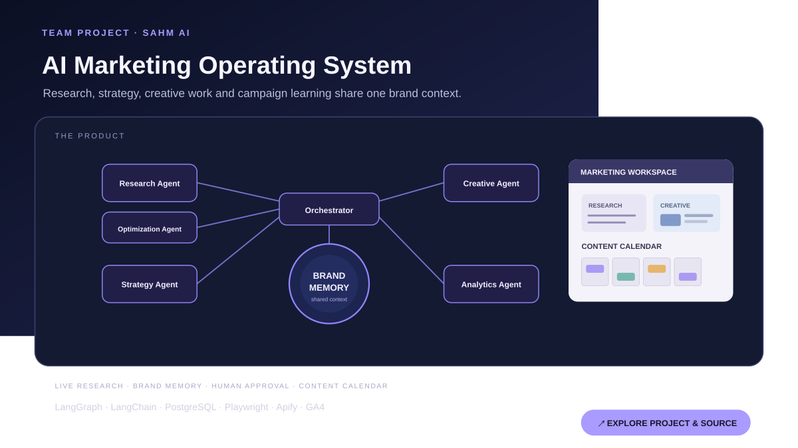
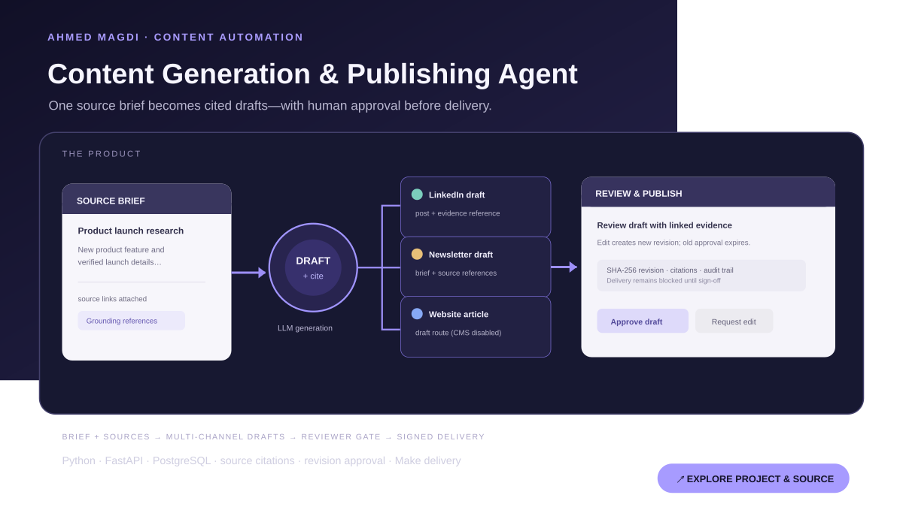
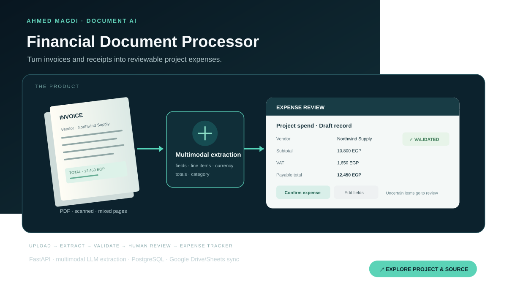
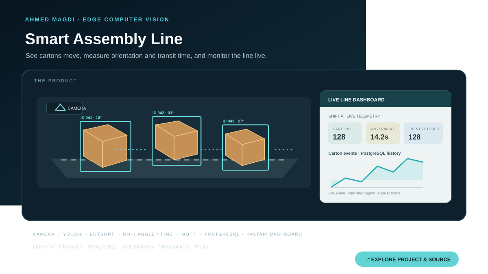

Agentic workflow automation
Automate support, content, and operations tasks with clear tool boundaries, escalation paths, and human approval.
I build agentic AI, LLM and retrieval applications, document intelligence systems, and computer vision products. My work connects model capabilities to APIs, data pipelines, validation, observability, and operational tools.

My focus is practical AI engineering: agent workflows, grounded retrieval, multimodal systems, computer vision, and applied machine learning. I work across Python backends, user-facing applications, databases, external services, and operational dashboards.
That range shows up in projects from a collaborative multi-agent marketing platform and an AI-assisted document processor to a conveyor vision system with live production telemetry.
I help teams reduce repetitive work, make trusted knowledge easier to use, and connect model capabilities to the APIs, data, interfaces, and review steps that real workflows need. Available for full-time, contract, part-time, internship, and freelance work.
Automate support, content, and operations tasks with clear tool boundaries, escalation paths, and human approval.
Make selected knowledge sources searchable and provide answers tied to retrieved context and structured outputs.
Turn PDFs and images into structured records with field checks, review for uncertain cases, and business-tool integrations.
Connect detection and tracking outputs to APIs, event streams, databases, and operational dashboards.
A selection of personal and team projects. Team scope and my contribution are called out separately.

Marketing research, strategy, creative work, analytics, and campaign planning share brand context under deterministic orchestration.
My contribution: Substantial backend and frontend work, with emphasis on backend—agent/orchestrator wiring, research and verification, compact brand memory, Arabic routing, and database performance.

Turns a brief and source references into LinkedIn, newsletter, and website drafts, with publication held behind human review.
Engineering detail: Source citations, digest-tracked revisions, approval invalidation after edits, signed jobs, and delivery status. Newsletter delivery creates a Gmail draft; the website channel awaits a CMS connection.

Extracts invoice and receipt data into project spending records, with checks for totals, duplicates, currency, and missing fields.
Engineering detail: Selectable and scanned PDFs, image inputs, reviewable uncertain records, PostgreSQL persistence, audit events, cost tracking, and Google Drive/Sheets workflows.

Tracks cartons on a conveyor, estimates orientation and transit time, and streams production events to an operations dashboard.
Engineering detail: YOLOv8 tracking with persistent IDs, polygon ROI filtering, finish-line events, OpenCV angle extraction, MQTT, PostgreSQL, and FastAPI/WebSocket dashboard.

Retrieves similar skin-image references and medical-document passages from image or text queries. Research/demo scope; no clinical validation is reported.

Learner support with contextual answers and persisted escalation tickets. My work includes ticket persistence, grounded Q&A, routing observability, multi-cohort support, and leakage evaluation.

Audits CUAD-style data, analyzes clause categories, creates instruction and chunked datasets, and fine-tunes Qwen2.5 with QLoRA. No accuracy score is stated.

EDA and prediction for the Udacity ML Charity Competition. Kaggle score: 0.96237; career record reports 11th of 336 participants.

Uses cosine similarity and nearest neighbors over reader-rating patterns, with a Streamlit interface for prepared data and uploaded ratings CSVs.

Predicts one of four classes from seven prepared ECG-derived features, with single-record entry and CSV batch prediction. No raw waveform processing or clinical validation is claimed.
Experience and training that inform how I build and integrate AI systems.
Practical training across computer vision, diffusion, Transformer/LSTM NLP, foundation-model fine-tuning, multimodal retrieval, and LangChain/LangGraph workflows.
Contributed to a LangGraph learner-support system with grounded answers, escalation handling, structured ticket data, and tracing. My internship record reports 40% fewer manual escalations and response latency below 10 seconds.
Worked with an internship team on an end-to-end book recommendation application, from book-rating data preparation to a deployed Streamlit experience.
Machine learning internship associated with deep learning and natural language processing work.
IoT internship associated with AWS and JavaScript skills.
Faculty of Engineering, Assiut University · Jul 2021 – Jun 2026
Deep Learning Specialization · DeepLearning.AI · LLM Course · Hugging Face · Computer Vision with PyTorch & OpenCV Bootcamp · OpenCV · Associate Data Scientist · DataCamp · Data Science and AI Course · Machinfy · McKinsey Forward Program
I’m open to opportunities worldwide across employment types and work arrangements, and willing to relocate. Tell me what you’re working on or where I could contribute.
Email Ahmed